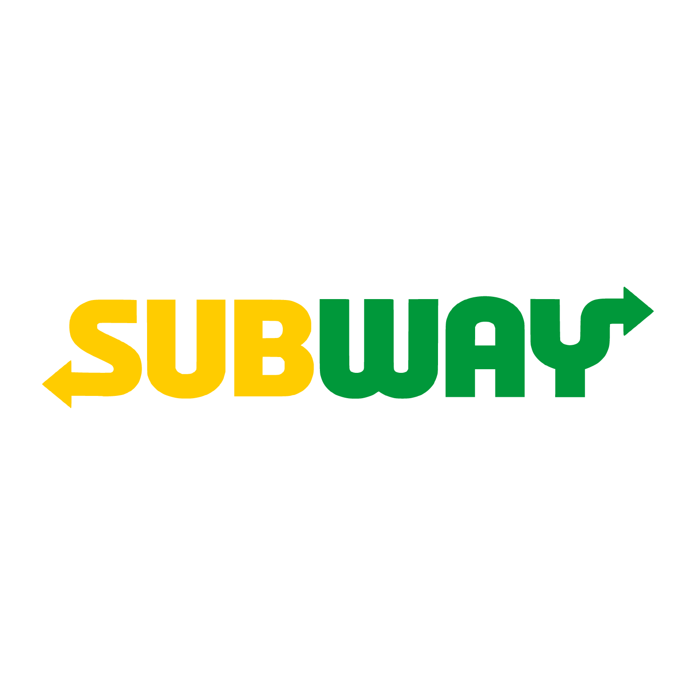
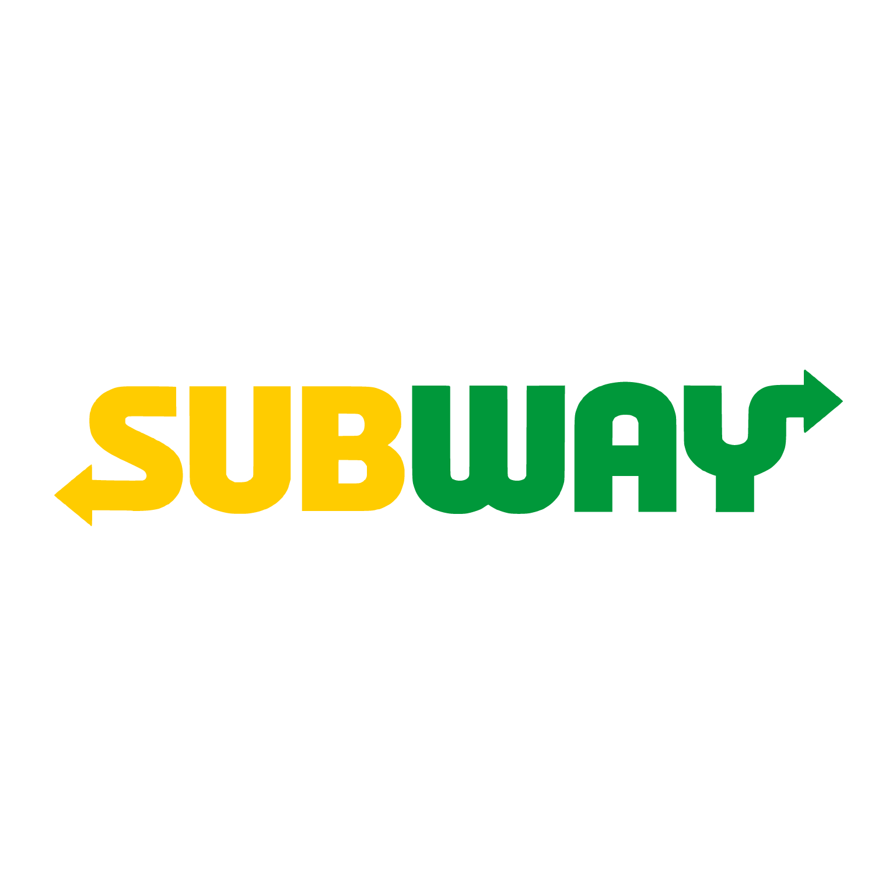

Atendimento e vendas pelo WhatsApp
Atendimento que parece humano, com velocidade de máquina.
- Responde em segundos, em qualquer horário, sem fila de espera.
- Conversa de forma natural, entendendo contexto e intenção do cliente.
- Nunca fica cansado, mal-humorado ou distraído no meio do atendimento.
- Mantém o mesmo nível de qualidade em todas as conversas, todo dia.
- Guia o cliente até o fechamento da compra, envio de link de pagamento ou agendamento.